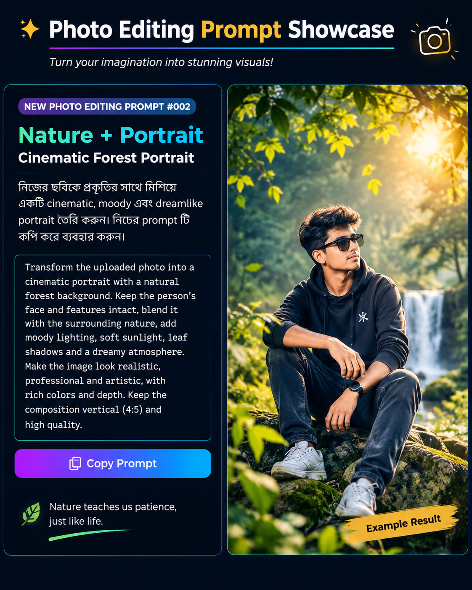

Cinematic Forest Portrait
নিজের ছবিকে সবুজ বন, ঝরনা ও সিনেম্যাটিক আলো দিয়ে নতুন রূপ দিন।
Prompt Image

AI Photo Editing Prompt
নিচের Prompt কপি করে তোমার পছন্দের AI photo editor-এ ব্যবহার করো।
নিজের ছবিকে সবুজ বন, ঝরনা ও সিনেম্যাটিক আলো দিয়ে নতুন রূপ দিন।

নিচের Prompt কপি করে তোমার পছন্দের AI photo editor-এ ব্যবহার করো।